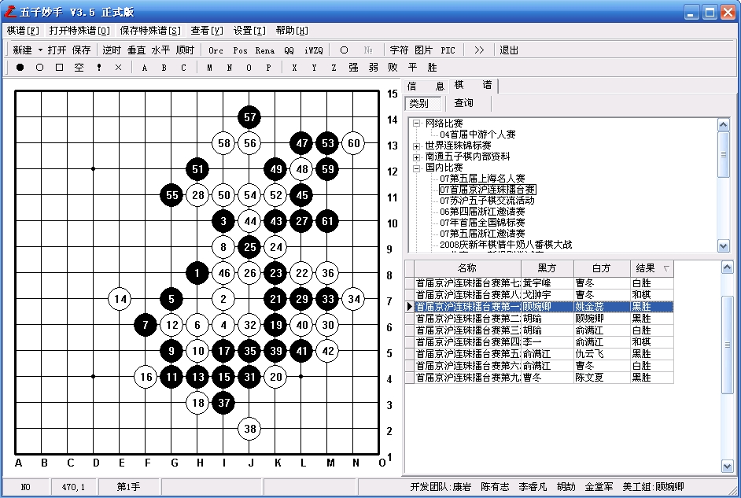

五子妙手3.5正式版发布2008-12-11更新
#1 五子妙手3.5正式版发布2008-12-11更新 作者：小丸.net 发表时间：2008-7-28 0:01:31
************************************************************************
软件名称：五子妙手 互动棋谱管理软件
软件版本：V3.5 正式版
软件作者：康岩[小丸.net]
软件类型：免费软件(永久免费)
************************************************************************
软件简介：五子妙手是五子棋爱好者不可少的研习打谱软件，他强大的研谱、棋谱管理功能可以为您在学习五子棋时起来事半功倍的作用。

本站下载
该文件经瑞星20.54.61查杀无毒,请放心下载.
开发历史：
V3.5修改版
1.修改了一些小BUG
2.增加了对RIF直播棋谱的转换功能
V3.5 正式版
1.修改了一些小BUG
2.新增自动播放功能.可以自动播放盘面上的棋谱
3.修改成了集成环境,增强棋谱的管理
V3.0 Beta III B0601 全团赛修改版
1.修正了软件在Vista下不能打开的BUG
2.增加13路，9路棋盘功能，兼容围棋打谱软件数据。
3.对打开SGF,ORC谱的功能增强,可以打开他们的详细信息并可以实时保存,并修改其中可能导致的系统死机的BUG
V3.0 Beta III
1.软件增加支持17*17路,19*19路棋盘
2.可以保存窗体的位置，大小，启动后自运设为上次运行的大小
3.在主界面上可以快捷打开棋谱
4.修改字体，让字体更好看
V3.0 beta II 贺岁版
1.修正了保存谱时一些操作上的问题
2.修正了一些显示的问题
3.增加了与博客系统相对应的棋谱代码生成器
4.修正了打开字符串棋谱不能检测错误的功能
#2 Re:五子妙手3.5正式版发布 作者：xr__ 发表时间：2008-7-28 10:02:31
跟旧版一样 skin002.dll 还是报毒！！
还请作者负责一下
#3 Re:五子妙手3.5正式版发布 作者：撒蓉儿 发表时间：2008-7-28 10:20:56
偶刚才下载的没有病毒啊#4 Re:五子妙手3.5正式版发布 作者：如果的事 发表时间：2008-7-28 10:22:27
我先看看
#5 Re:五子妙手3.5正式版发布 作者：如果的事 发表时间：2008-7-28 10:25:01
目前来看，没有病毒#6 Re:五子妙手3.5正式版发布 作者：小丸.net 发表时间：2008-7-28 13:16:14
本软件经最新正版软件查杀,确认无毒,所以可以放心使用.
二楼的软件报毒不排除电脑本身是否有注入型病毒.
#7 Re:五子妙手3.5正式版发布 作者：lfzxdh 发表时间：2008-7-28 13:44:30
下载了 无毒的,十分感谢小丸~!!
#8 Re:五子妙手3.5正式版发布 作者：xr__ 发表时间：2008-7-30 11:00:45
楼主这种 态度 不太负责 国内的某个杀毒软件 杀不出 就说无毒!
至少也得换几个杀软件查查 况且 还是在有人提醒后 仍不采取措施!!
我觉得你应该全面分析一下 找出原因 找不出原因 先别急着说无毒!!!
另 我试过 大部分好些的杀毒软件都报 楼主不会故意的吧!
#9 Re:五子妙手3.5正式版发布 作者：小丸.net 发表时间：2008-7-30 11:04:23
我怎么会故意呢。我为什么要故意。#10 Re:五子妙手3.5正式版发布 作者：老高 发表时间：2008-7-30 14:12:34
真的不错，谢谢。只是当前的棋子没有颜色突出显示，应该是这个软件的最大不足。#11 Re:Re:五子妙手3.5正式版发布 作者：老高 发表时间：2008-7-30 14:14:18
还有就是落子时，如果不严格对准十字，就会错位。#12 Re:五子妙手3.5正式版发布 作者：黑白之道 发表时间：2008-7-30 16:55:54
除了15路棋盘完，其余路数的棋盘星角标注的有问题。#13 Re:五子妙手3.5正式版发布 作者：gerbo 发表时间：2008-7-30 23:05:51
首先，我想丸子绝对不会故意弄什么XX的，如果电脑真的报告，请先检查下自身电脑是否有XX，同时说话请不要那么冲~！
#14 Re:五子妙手3.5正式版发布 作者：蜀桑子 发表时间：2008-8-1 14:49:09
真好~我最喜欢这个软件了
#15 Re:五子妙手3.5正式版发布 作者：幻影风笛 发表时间：2008-8-14 4:40:40
无毒的。卡巴毛豆小红伞都没报。报毒的估计是自己机子先中毒了-0-
谢谢LZ分享了！不错！
#16 Re:五子妙手3.5正式版发布 作者：年少 发表时间：2008-10-23 23:25:37
再好不过了。这个好像是目前最兼容的了。呵呵。谢了！！！
(*^__^*) 嘻嘻……
#17 Re:五子妙手3.5正式版发布2008-12-11更新 作者：旖旎阳光 发表时间：2009-1-10 11:56:50
谢谢
#18 Re:五子妙手3.5正式版发布2008-12-11更新 作者：野比伸太 发表时间：2009-3-10 19:42:09
兼容很多棋谱且能自动打谱很好，不过有个问题，为何不能手动打谱？#19 Re:五子妙手3.5正式版发布2008-12-11更新 作者：梧桐影 发表时间：2009-4-18 15:04:35
谢谢楼主！下载收藏
、、、、、、、
#20 Re:五子妙手3.5正式版发布2008-12-11更新 作者：超级天逸超人 发表时间：2009-4-19 15:56:40
嘿嘿 貌似我不大会用哈
呵呵 希望教下 我没见到 使用
说明哈